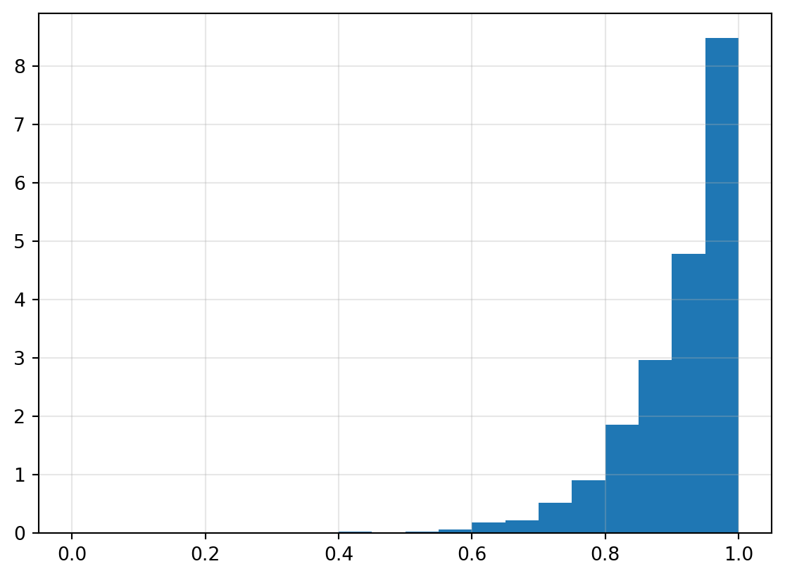

Let \(X_{1},\dots,X_{n}\overset{iid}{\sim}U[0,1)\)—which has density function \(f(x) = 1\) for \(0\leq x < 1\). Let \(Y_{n} = \max_{1\leq i\leq n}X_{i}\) be the maximum of the data. We want to determine the distribution of \(Y_{n}\). We’ll begin by simulating the maxima and then determine the exact distribution later.
# import librariesimport numpy as npimport matplotlib.pyplot as pltn =10u = np.random.rand(n)y =max(u) # compute their maxmiumprint(u, "\n")print("The sorted sequence of uniform random variables is \n", np.sort(u),"\n")print("The maximum of our observed random variables is \n", y)
[0.64336364 0.51250264 0.55924555 0.22203132 0.5676507 0.38457646
0.58477663 0.57381668 0.54009816 0.39768211]
The sorted sequence of uniform random variables is
[0.22203132 0.38457646 0.39768211 0.51250264 0.54009816 0.55924555
0.5676507 0.57381668 0.58477663 0.64336364]
The maximum of our observed random variables is
0.643363643191649
Let’s generate \(T = 10^{3}\) sets of \(n = 10\) independent standard Uniform random variables. We may utilise numpy.random.rand(n_row, n_col) to construct a rectangular array—a matrix—of independent standard uniform random variables and then apply numpy.max() to compute the columnwise (or rowwise) maxima.
sample_size =10n_samples =1000data = np.random.rand(sample_size, n_samples) # generate iid rectangular array of U(0,1)sample_maxima = np.max(data, axis =0) # compute the columnwise maxima if sample_size <=5& n_samples <=5:print(U)print(Y)
We’ve saved the sequence of maxima as Y. Let’s generate a histogram plot.
n_bins =20# identify the edges of equally spaced binsbins = np.linspace(0, 1, n_bins +1)plt.hist(sample_maxima, bins, density=True)plt.grid(True, alpha=0.3)plt.show()

Figure 1: Histogram of maxima of n = 10 independent standard uniform random variables
The empirical density in Figure 1 appears to be increasing exponentially on the interval \((0,1)\). Let’s compute the exact density of \(n\) independent standard uniform random variables to show that this is, in fact, true. If \(Y_{n} = \max\{X_{i}\}^{n}_{i = 1}\)—where \(X_{1},\dots,X_{n}\) is a generic sequence of independent and identically distributed random variables—then \(Y_{n}\) has distribution function \[\begin{align}
F_{Y}(y) &= \mathbb{P}(Y\leq y) \\
&= \mathbb{P}\left(\max_{1\leq i\leq n} X_{i}\leq y\right) \\
&= \mathbb{P}(X_{1}\leq y,\dots,X_{n}\leq y) \\
&= \mathbb{P}(X_{1}\leq y)\times\mathbb{P}(X_{2}\leq y)\times\cdots\times\mathbb{P}(X_{n}\leq y) \\
&= \left[\mathbb{P}(X_{1}\leq y)\right]^{n} \\
&= \left[F_{X}(y)\right]^{n}.
\end{align}\]
If the distribution function \(F_{X}\) is differentiable—so that the \(X_{i}\) have a density \(f_{X}\)—then \(Y_{n}\) has density \[\begin{align}
f_{Y}(y) &= \frac{\mathrm{d}F_{Y}(y)}{\mathrm{d}y} \\
&= n\left(F_{X}(y)\right)^{n - 1}F'_{X}(y) \\
&= n\left(F_{X}(y)\right)^{n - 1}f_{X}(y).
\end{align}\]
We know that \(f_{X}(y) = 1\), for \(0\leq y<1\). All that remains is to compute \(F_{X}\). Observe that, for \(x < 1\), \[\begin{align}
F_{X}(x) &= \int^{x}_{0} f_{X}(t)\,\mathrm{d}t \\
&= \int^{x}_{0} \mathrm{d}t \\
&= x.
\end{align}\]
Hence, \(Y_{n}\) has density \[
f_{Y}(y) = n\cdot y^{n - 1}\cdot 1 = ny^{n - 1},
\] for \(0\leq y < 1\). Let’s overlay the true density over our empirical data.
Histogram of sample maxima overlayed with true density
Exercise 3
Let \(A\) be the event that surgery is successful on the left knee and let \(B\) be that surgery is successful on the right knee. Let \(S\) be the number of successful surgeries. Clearly \(S\in\{0,1,2\}\). Observe that the event \(\{S = 0\} = A\cap B\). Independence between the events \(A\) and \(B\) implies \[\begin{align}
\mathbb{P}\{S = 2\} &= \mathbb{P} A\cap B \\
&= \mathbb{P}A\,\cdot\mathbb{P}B \\
&= 0.90\times 0.67 \\
&= 0.603
\end{align}\] Recall that independence of two events \(E\) and \(F\) also implies independence between their respective complements \(E^{\complement}\) and \(F^{\complement}\)—you should show that this is true. Now, observe that the event \(\{S = 0\} \equiv A^{\complement}\cap B^{\complement}\). Hence, \[\begin{align}
\mathbb{P}\{S = 0\} &= \mathbb{P}A^{\complement}\cap B^{\complement} \\
&= \mathbb{P}A^{\complement}\,\cdot\mathbb{P}B^{\complement} \\
&= (1 - \mathbb{P}A)(1 - \mathbb{P}B) \\
&= (1 - 0.90)(1 - 0.67) \\
&= 0.033
\end{align}\]
It remains to compute the probability of the event \(\{S = 1\} = \left(A^{\complement}\cap B\right)\cup\left(A\cap B^{\complement}\right)\). Note that the event \(\{S = 1\}\) is composed of the union of two disjoint events, for which we can simply apply the sum of probabilities. However, we have already determined the values for all other minimal events. Hence, we can simply observe that \[
\mathbb{P}\{S = 1\} = 1 - \mathbb{P}\{S = 2\} - \mathbb{P}\{S = 0\}.
\] The density \(f(s) = \mathbb{P}\{S = s\}\) since \(S\) is a discrete random variable. Thus, \[
f(s) = \begin{cases} 0.033, & s = 0 \\
0.364, & s = 1 \\
0.603, & s = 2 \end{cases}.
\]
Hence, the expected number of successful surgeries is \[\begin{align}
\mathbb{E}S &= \sum^{2}_{s = 0} s\cdot f(s) \\
&= 0\cdot f(0) + 1\cdot f(1) + 2\cdot f(2) \\
&= 1.57.
\end{align}\]
The variance for the number of successful surgeries is \[\begin{align}
\operatorname{Var}S &= \mathbb{E}\left(S - \mathbb{E}S\right)^{2} \\
&= \mathbb{E}S^{2} - \left(\mathbb{E}S\right)^{2} \\
&= \left(0^{2}\cdot f(0) + 1^{2}\cdot f(1) + 2^{2}\cdot f(2)\right) - 1.57^{2} \\
&= 0.3111.
\end{align}\]
Note
We’ve computed the expected value and variance directly from the density of \(S\). Is there another way that we can compute the expected value? (Create a Bernoulli random variable for each knee and apply independence)
Exercise 4
If \(X\sim\text{Exp}(\lambda)\), for positive \(\lambda\), then \(X\) has density \(f(x) = \lambda^{-1}\exp\left(-x\lambda^{-1}\right)\), for positive \(x\). Let’s plot this density for \(\lambda = 46\).
Observe that the density has \(y\)-intercept \(f(0) = \lambda^{-1} \approx 0.0217\). The parameter \(\lambda\) defines the expected value (and variance) of the Exponential distribution. Let’s show this. We’ll apply the substitution \(y = x / \lambda\). Observe that \[
\begin{align}
\mathbb{E}X &= \int^{\infty}_{0} xf(x)\,\mathrm{d}x \\
&= \int^{\infty}_{0} \frac{x}{\lambda}\exp\left(-\frac{x}{\lambda}\right)\,\mathrm{d}x \\
&= \lambda\int^{\infty}_{0} y\mathrm{e}^{-y}\,\mathrm{d}y \\
&= \lambda\left(\left[-y\mathrm{e}^{-y}\right]^{y = \infty}_{y = 0} + \int^{\infty}_{0}\mathrm{e}^{-y}\,\mathrm{d}y\right) \\
&= \lambda,
\end{align}
\] where we use integration by parts to show that \(\int^{\infty}_{0}y\mathrm{e}^{-y}\,\mathrm{d}y = 1\).
Exponential distributions are commonly used to model lifetimes, for example, how long will a lightbulb last. We might be interested in the survival function\(\overline{F}(x) = \mathbb{P}\{X > x\}\)—the probability that an objects lasts a minimum length of time. Using properties of densities, we can compute \[
\overline{F}(x) = \int^{\infty}_{x} f(t)\,\mathrm{d}t = \mathrm{e}^{-x/\lambda}.
\] Let’s simulate the derived results.
import scipy.stats as statsn =1000cutoff =30data = stats.expon.rvs(scale = parameter, size = n)plt.hist(data, density =True)plt.plot(x, exp_density, linewidth =2)plt.show()